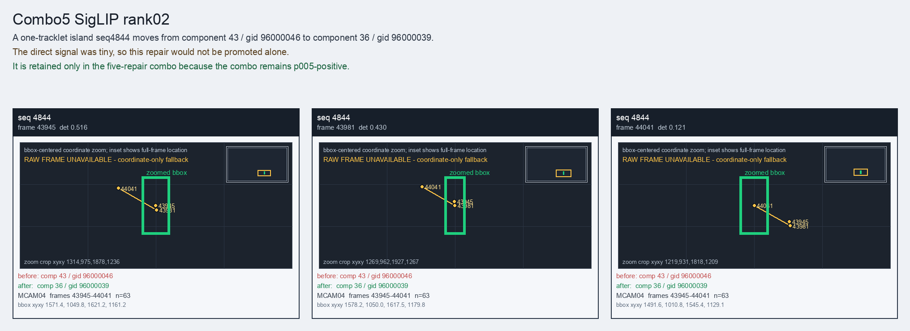

Combo5 SigLIP rank02
A one-tracklet island seq4844 moves from component 43 / gid 96000046 to component 36 / gid 96000039.
Before
component 43, gid 96000046, component_size 94
component 43, gid 96000046, component_size 94
After
component 36, gid 96000039, component_size 122, decision_status post_seq6257_combo_probe
component 36, gid 96000039, component_size 122, decision_status post_seq6257_combo_probe
Evidence
target_sim=0.6426, target_margin=0.0949, source_rest_margin=0.6674
Raw frame
unavailable_coordinate_fallback
target_sim=0.6426, target_margin=0.0949, source_rest_margin=0.6674
Raw frame
unavailable_coordinate_fallback
Failure and fix
Old failure: The direct signal was tiny, so this repair would not be promoted alone.
New implementation: It is retained only in the five-repair combo because the combo remains p005-positive.
BBox evidence

Moved tracklets
| seq | video | gid | component | frames | dets |
|---|---|---|---|---|---|
| 4844 | vlincs_MS01_MC0001_MCAM04_2024-03-Tc6 | 96000046 -> 96000039 | 43 -> 36 | 43945-44041 | 63 |